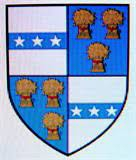

6008918 Hugh Danzielstour
Blev högst 30 år.

Född:
1270 Kilmarnock, Scotland.
[1]
Död:
1300 Ayrshire, Scotland.
[1]
Barn med
6008919 Lady Mary Fleming (1277 - 1318)
Barn:
Joanna Danzielstour (1296? - 1330)
Personhistoria
Årtal
Ålder
Händelse
1270
Födelse 1270 Kilmarnock, Scotland
[1]
1277
Partnern
6008919 Lady Mary Fleming
föds 1277 Cumbernauld, Lanarkshire, Scotland
[1]
1296?
Dottern
3004459 Lady Joanna Danzielstour
föds omkring 1296 Kilmarnock, Scotland
[2]
1300
Död 1300 Ayrshire, Scotland
[1]
Källor
[1]
natoab
[2]
Sean C. Wright